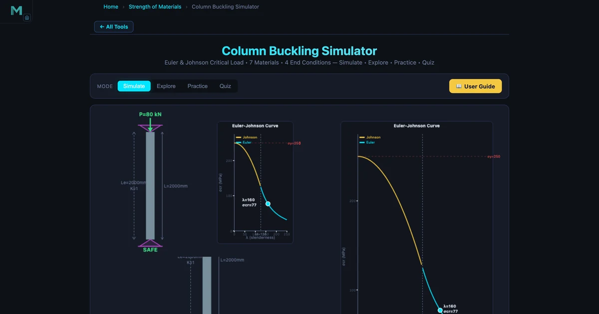
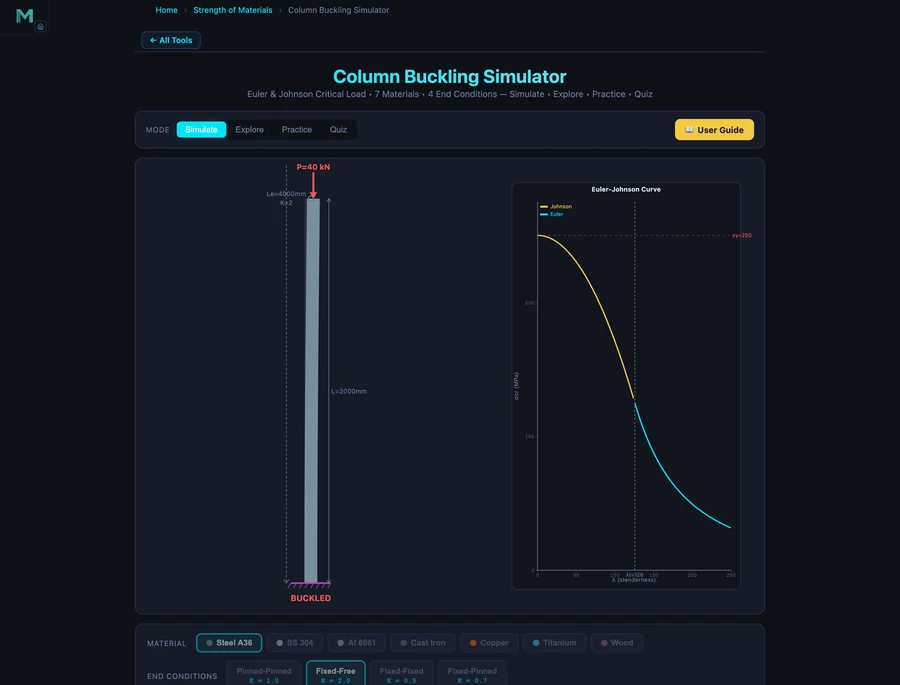

Column Buckling Simulator — Euler Formula, Critical Load & Slenderness Ratio

- Euler's critical buckling load is Pcr = π²EI/(KL)², where E is the elastic modulus, I the minimum moment of inertia, K the effective length factor, and L the column length — it depends on stiffness and geometry, not yield strength.
- The effective length factor K is set by end conditions: K = 1.0 (pinned-pinned), 2.0 (fixed-free), 0.5 (fixed-fixed), 0.7 (fixed-pinned); because Pcr ∝ 1/(KL)², a cantilever buckles at one-quarter the load of an identical pinned-pinned column.
- Use Euler when the slenderness ratio λ = KL/r ≥ λt = √(2π²E/σy) (≈ 125.7 for Steel A36); below that, stocky columns use Johnson's parabolic formula σcr = σy − (σy²/4π²E)·λ².
Column buckling is a failure mode that doesn't announce itself with yielding or cracking. The column looks fine right up until the moment it doesn't. That sudden lateral deflection under axial load — what engineers call elastic instability — has toppled buildings, cracked bridges, and bent aircraft frames. The column buckling simulator puts Euler's formula in your hands interactively, so the difference between a safe column and a buckled one stops being a calculation and starts being something you can see.
Why buckling catches students off guard
There's a particular moment of confusion that shows up in every Strength of Materials class. A student computes the compressive stress σ = P/A, confirms it's well below the yield strength, and concludes the column is safe. Then you show them that the same column can buckle at a fraction of the yield stress — and the confusion is visible on their face.
Buckling is a stability failure, not a strength failure. The column doesn't crush; it deflects sideways. The critical load depends on stiffness and geometry, not material strength. A 200 GPa steel column buckles before a 69 GPa aluminium one if the aluminium is stockier — because slenderness is everything.
That's the lesson the simulator delivers visually. Set the load above Pcr and click Run Simulation. The column bends before your eyes, the verdict banner turns red, and the message is unmistakable: structural failure. Change to a shorter column or larger diameter, and the same load is suddenly safe. The animated buckled mode shape makes the instability concept concrete in a way that a static diagram never quite manages.
Euler's formula and what it depends on
For a long slender column (slenderness ratio λ ≥ λt), Euler's critical load is:
\[P_{cr} = \dfrac{\pi^2 E I}{(KL)^2}\]
where E is the elastic modulus (MPa), I is the minimum moment of inertia (mm⁴), K is the effective length factor, and L is the column length (mm). Four things to notice immediately. First, Pcr is proportional to EI — material stiffness times cross-section second moment. Second, Pcr is inversely proportional to the square of the effective length — doubling the length drops Pcr by a factor of four. Third, yield strength doesn't appear anywhere — Euler's formula is purely elastic. Fourth, K is critical: getting the end condition wrong by one step can change Pcr by a factor of four or sixteen.
The slenderness ratio ties it together:
\[\lambda = \dfrac{K L}{r}, \quad r = \sqrt{\dfrac{I}{A}}\]
For a solid circular section with diameter d: r = d/4. For the hero image column (d = 50 mm): r = 12.5 mm. With K = 1.0 and L = 2000 mm: λ = 2000/12.5 = 160. The transition slenderness for Steel A36 (σy = 250 MPa, E = 200000 MPa) is λt = √(2π²×200000/250) = √15791 ≈ 125.7. Since 160 > 125.7, Euler's formula applies. The simulator confirms: method = Euler, σcr = π²×200000/160² = π²×200000/25600 = 77.1 MPa, Pcr = 77.1 × 1963.5 = 151.4 kN.
Effective length factors — why end conditions dominate the result
The K factor might be the most important and most commonly misapplied concept in column design. Here's the quick reference:
Pinned-Pinned (K = 1.0)
Both ends rotate freely but can't translate. The buckled shape is a single half-sine wave. This is the reference case — all other K values are measured against it. Common in simply supported truss chords and columns with bolted connections that aren't rigidly welded.
Fixed-Free — Cantilever (K = 2.0)
One end fully fixed, one end free. The buckled shape is a quarter sine wave. This is the worst-case condition — effective length is twice the actual length, so Pcr drops to one-quarter of the pinned-pinned value. Flagpoles, freestanding columns, and pedestal mounts fall into this category. The body image shows this: the same 50 mm diameter, 2000 mm Steel A36 column under K = 2.0 gives Le = 4000 mm, λ = 320, σcr = 19.3 MPa, and Pcr = 37.8 kN — exactly 4× less than the pinned-pinned value of 151.4 kN. A 40 kN load that was safe under pinned-pinned conditions causes immediate buckling here.
Fixed-Fixed (K = 0.5)
Both ends fully fixed. The strongest case — effective length is half the actual length, giving 4× the critical load of a pinned-pinned column. Welded steel frames with rigid gussets approach this condition in practice, though building codes often use K = 0.65 to account for imperfect fixity.
Fixed-Pinned (K = 0.7)
One end fixed, one end pinned. The buckled shape has a single inflection point. Le = 0.7L. Between fixed-fixed and pinned-pinned in terms of resistance — a reasonable middle ground for column bases that are welded to a slab but connected by a pin at the top.

When to use Johnson's formula instead of Euler's
Euler's formula assumes the column is long enough that it fails by elastic buckling before the material yields. For shorter, stockier columns (λ < λt), the column yields locally before elastic buckling governs. Johnson's parabolic formula handles this region:
\[\sigma_{cr} = \sigma_y - \dfrac{\sigma_y^2}{4\pi^2 E} \cdot \lambda^2\]
For Steel A36 at λ = 80 (a stocky column): σcr = 250 − (250²/(4π²×200000)) × 80² = 250 − (62500/7895684) × 6400 = 250 − 50.7 = 199.3 MPa. Compare that to Euler at the same λ: σcr,Euler = π²×200000/6400 = 308.4 MPa — which exceeds the yield strength of 250 MPa. That's why Johnson takes over for stocky columns: the Euler prediction is physically impossible (it predicts a stress above yield), so the transition to Johnson is automatic and mandatory.
The simulator plots the full Euler-Johnson curve on the canvas in real time and places a dot showing exactly where your column sits on it. Students who move the length slider and watch the dot traverse the curve from the Johnson region into the Euler region understand the transition intuitively in about thirty seconds.
How to use this in a lesson
Setup (3 min). Open the simulator with default settings (Steel A36, Pinned-Pinned, d = 50 mm, L = 2000 mm). Set load to 80 kN and run. Pcr = 151.4 kN, FOS = 1.89 — safe. Write the numbers on the board.
End condition experiment (10 min). Reset and change to Fixed-Free without touching anything else. Set the same load (80 kN) and run. Pcr = 37.8 kN — the column buckles. Ask students why. Let them derive it: K doubled (1.0 → 2.0), Le doubled, Pcr dropped by 4. Then challenge them: what single change to the pinned-pinned column would push FOS above 3.0? Change length? Change diameter? Change material? Let them experiment.
Johnson vs Euler transition (5 min). Switch to Aluminium 6061, shorten the column to 500 mm. The readout should show 'Johnson'. Ask why the method changed. Walk through the transition slenderness calculation. This connects to the truss analysis guide — compression chords in trusses are often the exact type of intermediate-length member where Johnson applies.
Design problem (10 min). Given: 60 kN compressive load, Fixed-Pinned end conditions, L = 1.5 m, Steel A36. Design the minimum diameter solid circular column with FOS ≥ 2.0. Students start with a guess and use the simulator to check. Iterate. This is the actual design workflow — start with a trial section, check FOS, resize, repeat.
Try It Yourself
All tools below are free — no account, no download.
Key Takeaways
- Buckling is a stability failure — the column deflects sideways before the material yields. Euler's formula Pcr = π²EI/(KL)² depends on E and geometry, not yield strength.
- The effective length factor K is decisive: K = 1.0 (pinned-pinned), 2.0 (fixed-free), 0.5 (fixed-fixed), 0.7 (fixed-pinned). A cantilever column buckles at one-quarter the load of an otherwise identical pinned-pinned column.
- The slenderness ratio λ = KL/r classifies columns as long (Euler, λ ≥ λt) or intermediate (Johnson, λ < λt). For Steel A36, the transition is λt ≈ 125.7.
- For the hero image column (Steel A36, d=50mm, L=2000mm, pinned-pinned): Pcr = 151.4 kN, λ = 160, σcr = 77.1 MPa. Changing to cantilever drops Pcr to 37.8 kN — four times less.
- Johnson's formula applies to stocky columns where the Euler prediction would exceed yield strength. The simulator automatically selects the correct formula and labels the method in the readout.
- Always use the minimum radius of gyration r = √(Imin/A). For solid circles r = d/4. Hollow sections are more efficient — same weight, larger r, higher critical load.
Frequently Asked Questions
What is Euler's critical buckling load formula?
Euler's critical buckling load is Pcr = π²EI/(KL)², where E is the elastic modulus (MPa), I is the minimum moment of inertia (mm⁴), K is the effective length factor, and L is the column length (mm). For a Steel A36 column (E=200000 MPa), pinned-pinned (K=1.0), solid circle d=50 mm, L=2000 mm: I = πd⁴/64 = 306796 mm⁴, Pcr = π²×200000×306796/2000² = 151400 N ≈ 151.4 kN.
What is the effective length factor K and why does it matter?
The effective length factor K adjusts the column length based on its end conditions. K=1.0 for pinned-pinned, K=2.0 for fixed-free (cantilever), K=0.5 for fixed-fixed, K=0.7 for fixed-pinned. Since Pcr ∝ 1/(KL)², changing from pinned-pinned to fixed-free (K doubles) reduces Pcr by a factor of 4. The cantilever column in the body image (K=2.0, same 50 mm diameter) has Pcr = 37.8 kN — exactly 4× less than the pinned-pinned value of 151.4 kN.
When should you use Euler vs Johnson formula for column buckling?
Use Euler's formula when the slenderness ratio λ = KL/r is greater than or equal to the transition value λt = √(2π²E/σy). For Steel A36 (E=200000 MPa, σy=250 MPa), λt = √(2π²×200000/250) ≈ 125.7. For λ < 125.7 (stocky columns), use Johnson's parabolic formula σcr = σy − (σy²/4π²E)×λ². The simulator automatically selects the correct formula and labels the result 'Euler' or 'Johnson'.
What is the slenderness ratio and how is it calculated?
The slenderness ratio λ = Le/r = KL/r, where Le is the effective length and r is the minimum radius of gyration (r = √(I/A)). For a solid circular section with diameter d, r = d/4. The slenderness ratio determines whether a column fails by elastic buckling (Euler, high λ) or inelastic yielding (Johnson, low λ). Higher λ means the column is more slender and more susceptible to elastic buckling at stresses well below the yield strength.
How do I use the column buckling simulator?
Open the Column Buckling Simulator at NHIT VisualLab/tools/column-buckling/. Select material (7 options including Steel A36, Aluminum, Titanium), end condition (Pinned-Pinned, Fixed-Free, Fixed-Fixed, or Fixed-Pinned), and cross-section (Solid Circle, Hollow Circle, Rectangle, or I-Beam). Adjust the column length and dimension sliders, then set the applied load and click Run Simulation. The readout panel shows Pcr, σcr, slenderness ratio λ, effective length Le, radius of gyration r, method (Euler or Johnson), and factor of safety. If the load exceeds Pcr, the column animates a buckling deflection and the verdict banner shows 'BUCKLED'.
Column buckling failures are silent and sudden. Understanding what controls Pcr — length squared in the denominator, end conditions in K, moment of inertia in the numerator — gives you the intuition to catch problems before the simulation runs red.
Open the Column Buckling Simulator, set a pinned-pinned Steel A36 column, run it safe at 80 kN, then switch to Fixed-Free without changing anything else. The verdict flip from green to red is a lesson you don't forget.